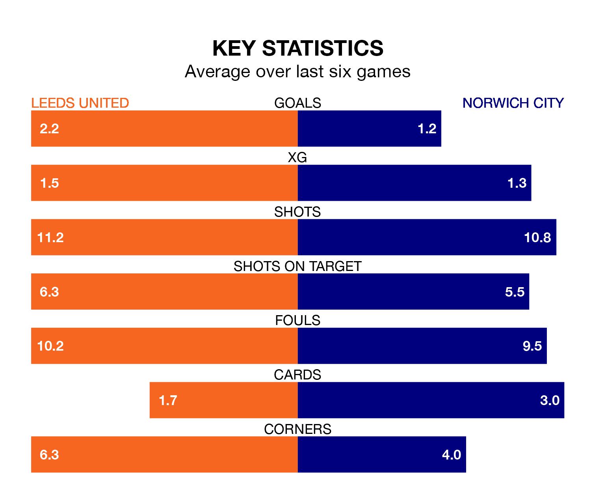

Leeds United are heavy favourites to keep all three points at home in Wednesday's late kick-off against Norwich City.
Leeds, who sit fourth in EFL Championship with 28 games played, are priced at 1.6 to seal victory at Elland Road.
Sitting four places and 13 points behind them in the table, Norwich are 5.9 to win with *Betting Company*, while the draw is at 4.0.
With 50 goals in 28 games so far this season, Leeds are scoring more than average in the league with 1.8 goals per game. And they are conceding fewer than average, letting in 26 goals at a rate of 0.9 per game.
Norwich are also above average scorers, with 1.6 goals per game, compared to a league average of 1.4. They have conceded 1.5 goals per game.
With Illan Meslier between the sticks, United can rely on one of the league's safest pair of hands. He has kept nine clean sheets in his 26 appearances this season, and only one other 'keeper – West Bromwich Albion's Alex Palmer – has been able to prevent the opposition scoring on more occasions in EFL Championship.
In City's net, Angus Gunn has six clean sheets in 22 games. He has conceded a goal every 84 minutes, 30% more often than the 110 minutes between goals for Meslier.
In the last 10 years, Leeds and Norwich have played each other on 12 occasions. Leeds won six of them, Norwich three, and they drew three times.
On average, Leeds scored 1.8 goals and the Canaries 1.6 in those matches.
Their last meeting was on October 21, when Leeds won 3-2 away.
The hosts are in reasonable form in EFL Championship, with four wins and two losses from their last six games.
With three wins and a draw over that period, the Canaries' form is slightly worse – they have taken 10 points from 18, compared to Leeds's 12.
Leeds's last match was on Sunday, a 2-1 win against Preston North End, with Daniel James getting the goals for Leeds.
Norwich beat West Bromwich Albion 2-0 last time out, on Saturday, with Jon Rowe and Joshua Sargent on the scoresheet.
Wednesday's match will be refereed by Matt Donohue, who has taken charge of 16 EFL Championship games so far this season, issuing one red card and booking 71 players. He has awarded two penalties.
The last Leeds game Donohue refereed was a 1-1 home draw with West Bromwich Albion on August 18. His last Norwich match was their 3-1 win at home against Sheffield Wednesday on December 13.
Updated: 09:18 (UTC), 23/01/24